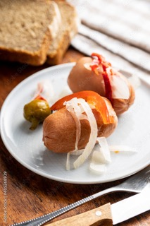

Pořádáte nějakou akci a chcete mít hodně masa bez práce? Pak jsem tu pro Vás.
Na vaši rodinnou oslavu, firemní školení či oslavu narozenin Vám na míru zajistím také catering, plný jichých dobrot jako je tatarák, pečená hovězí žebírka, rolády, obložené mísy a mnoho dalších pochutin.
Co je to masové koryto?
Dřevěné koryto, které pro Vás připravím, je plné různých druhů jak pečených, tak grilovaných masových dobrůtek. Koryta nabízím v několika velikostech, aby se hodily na stůl malé i větší oslavy.
Nabídka koryt:
-

- Cca 10 osob
- Celkem 8 kg masa
- Cena 2.850 Kč
Malé
- Cca 15 osob
- Celkem 13 kg masa
- Cena 4.300 Kč
Střední
- Cca 20 osob
- Celkem 18 kg masa
- Cena 5.750 Kč
Velké
Co v korytu naleznete?
Pomalu pečené kolena na česneku, marinovaná vepřová medová žebírka, pečené kuřecí paličky, kuřecí a vepřové miniřízky, nadívaná pečená krkovice (slanina, cibule), mini jelítka a jitrničky, klobásky z udírny, smažené cibulové kroužky, kyselé okurky, beraní rohy, čerstvý křen, hořčice, feferony, čerstvý chléb.
Úpravy
Koryta je možné po domluvě zhotovit i v jiných velikostech či udělat změnu v jejich složení.
Objednávky
Objednávky můžete zasílat na email nebo zavolat na telefoní číslo.
Aby si koryto udrželo teplotu po celou dobu Vaší akce, nabízím také možnost zapůjčení šafingu.
Objednávky přijímám alespoň dva dny dopředu.
Na samotné koryto bude požadována vratná záloha ve výši 2.000 Kč.
Masové koryta si můžete vyzvednout osobně na uvedené adrese nebo Vám můžou být dovezena přímo na místo určení. Cena dopravy: 5 Kč za každý ujetý km
Kontakty
Pro aktuální informace zavítejte na mou facebookovou stránku

Tel.: +420 725 815 017
E-mail: masovekoryta.ostrava@gmail.com
Kde mě najdete?
Hospůdka Na Špici
Svazácká 496/1
700 30 Ostrava-Jih
Hospůdka Na Špici
Hledáte místo, kde uspořádat oslavu či večírek s kolegy s práce?
Masové korýtko či celý catering Vám pomohu zařídit u nás v Hospůdce Na Špici. Jestě horké z kuchyně na Váš stůl a k tomu výborná tanková 10°či 12°.